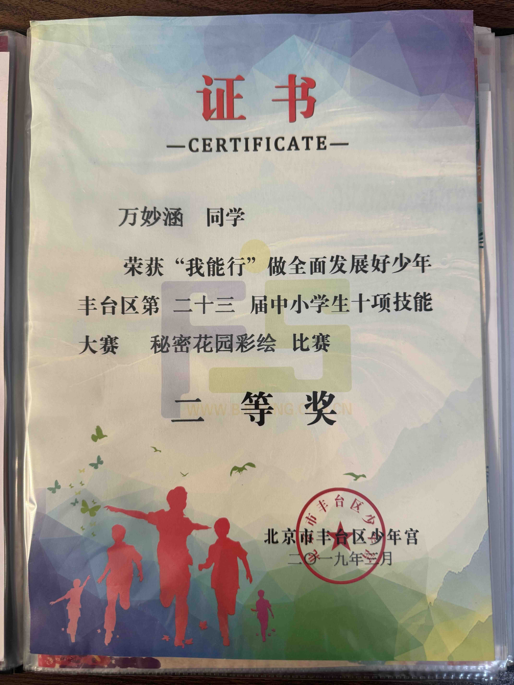
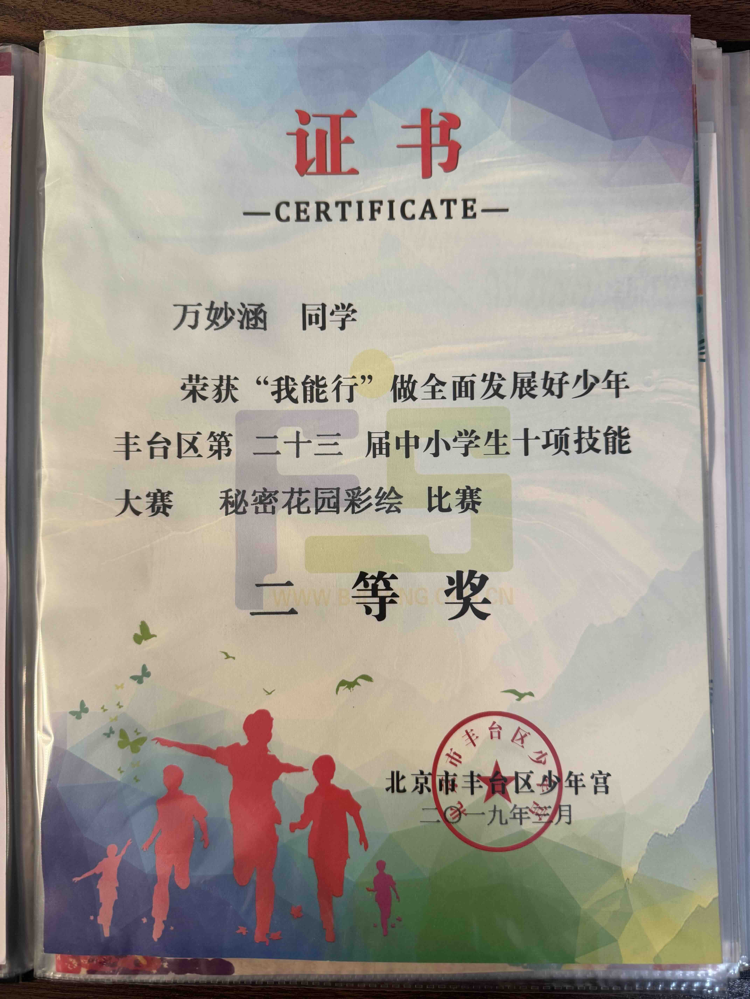

Academics
While I’ve maintained straight A’s in all my academic courses, I’ve always believed that learning doesn’t stop at the classroom door.
Over the past few years, I’ve poured myself into experiences that stretch my curiosity, resilience, and creativity. I’ve been volunteering
with the Denver Rescue Mission for three years—not for hours, but for impact, and to remind myself why compassion matters. I created my own
YouTube channel, where I’ve uploaded hundreds of videos teaching math, science, economics, and vocabulary—not because I was asked to,
but because I love turning knowledge into something that can help others grow.
Certification - Achievements Earned, Excellence Proven
I’ve also stepped into spaces that pushed me beyond my comfort zone: I joined clubs, competed, and won awards; I published voice acting clips that
brought characters to life; I began writing a novel to give voice to the stories inside me. During the summers, I chose to work—not just to earn,
but to learn—and most recently, I’ve been exploring computer game programming, combining logic and creativity in ways I never imagined.
None of this was easy. I’ve had to manage time, overcome self-doubt, and push through language and cultural barriers. But I’ve never lost the joy.
I’ve learned that passion doesn’t have to be loud—it just has to be real. And in every step I’ve taken, I’ve carried that passion with me,
using it to build a version of myself that’s not only hardworking, but always growing, always reaching, always ready to do more.


 
